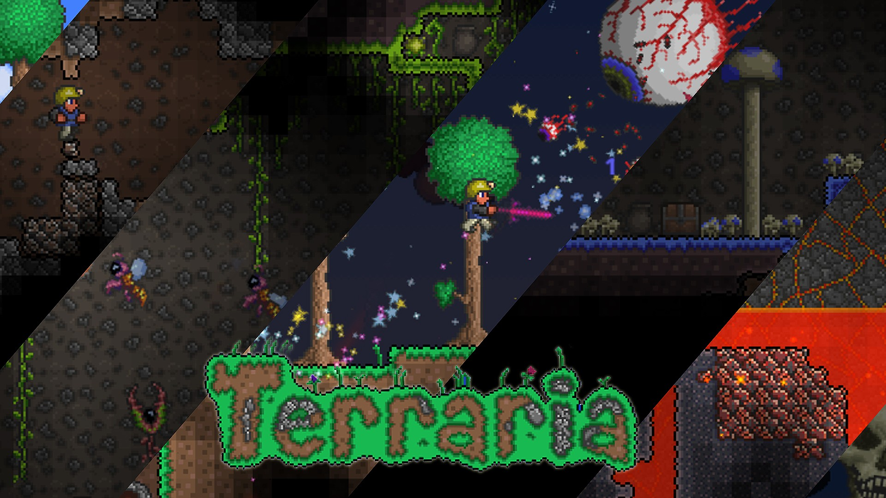
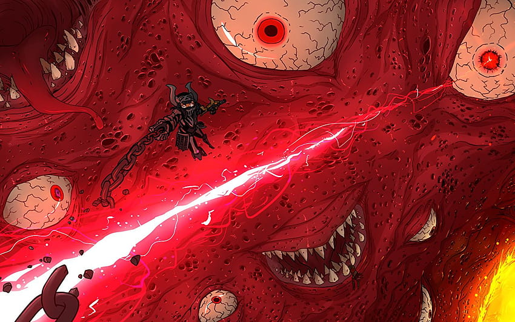

Introdución
Terraria esconde una profundidad increíble detrás de sus píxeles y arbolitos
Este es un título donde te vas a encontrar frente a una aventura con más de 100 horas de juego en los que tenéis que recorrer más morras luchar contra criaturas voladoras y monstruos para salvar un mundo cuya supervivencia pende de un hilo y es en ese fino hilo donde entra tu personaje sin embargo mucho antes de que llegaras este mundo ya existía Aunque vamos a aclarar las cosas

Comienzo
Terraria no es un mundo Precisamente es más bien un microuniverso donde varios planetas coexisten pacíficamente entre sí y conectados por un hilo universal Más allá del entendimiento humano Pero eso sí cada uno de estos microuniversos están lo suficientemente separados para que no colisionen entre sí creen que se lo explique más claro bueno todo tenía un perfecto balance así Un día como cualquier otro y contra todo pronóstico se manifestó una criatura que solo buscaba sembrar la destrucción por donde pasaba acabando con toda paz armonía y estabilidad que pudiese existir sin un lugar de origen determinado y apareciendo casi del vacío.
Cthulhu
Cthulhu llegó al mundo no obstante para entender Quién es Cthulhu el profesor nos va a explicar raro de acá que probablemente algunos sí has escuchado antes
(no me interesa saber su opinión viene de la imaginación retorcida de lovecraft no sabe quién es lovecraft bueno no me voy a poner a explicar acá eso básicamente fue un referente Por su forma de tratar al terror y no por Mostrar esos payasos aterradores o asesinos en serie sino porque el Flaco este tenía un temita con la psicología humana e intentaba dar terror mostrando criaturas entidades que escapan a nuestro entendimiento sí un falopero total pero no lo vamos a poner a discutir esto ahora mismo Ah Y) Sí Cthulhu Bueno originalmente Cthulhu apareció en el cuento titulado la llamada de Cthulhu acá se nos describe como un monstruo de proporciones inmensas con una cara similar a un pulpo un cuerpo enorme parecido al humano y a las de dragón Sí una imaginación cuanto menos curiosa tenía este tipo Lo importante es que Cthulhu lo único que tiene en mente es reinar a través del caos y para lograrlo destruirá a todo aquel que no se arrodilla en su nombre un poco dramático.

Ahora que ya saben un poco más del contexto volvamos a lo que estábamos este monstruo o más bien una manifestación de él apareció en terraria dispuesto a destruir y dominar al universo cutulu lo consumía todo a su paso y la estabilidad del mundo incapaz de responder a amenaza tan poderosa parecía estar a punto de ser completamente destruida parecía de no ser porque las legendarias Dríadas unieron fuerzas y lograron parar La amenaza de esta entidad
Dríadas
Les explico las Dríadas una especie casi tan antigua como la tierra misma han guardado siempre una estrecha relación con el mundo y la naturaleza viviendo en total respeto y armonía con ellas llegando incluso hasta sus límites por protegerla
Batalla y Derrota de Cthulhu
Por eso poniendo por encima de todo la supervivencia del mundo derrotaron a Cthulhu sacrificando a casi toda su especie dejando a una sola superviviente y acá se preguntarán Por qué no dejaron dos de esta especie para que se reproduzcan la verdad que no tengo ni idea pero es una muy buena pregunta Lo importante es que ellas lo dieron todo de sí aunque no lograron matarlo sino de tenerlo siendo piezas de su cuerpo por todo el mundo su esqueleto cerebro y ojos fueron repartidos a lo largo y ancho de este universo y lo que quedó del monstruo se vio obligado a huir hacia el lado oscuro de la luna donde descansaría en secreto recuperándose poco a poco para algún día volver Y lograr su cometido Y es que recuperar semejante poder también conllevaría una larga espera
Lunaticos
Sin embargo en el mundo de Terraria un grupo de personas cegadas por la adición del caos perfecto que quería sembrar Cthulhu se pusieron como tarea revivir cueste lo que cueste a aquella entidad y volver a traerla a la Tierra así es como nació la secta de los lunáticos llamados así no solo porque estuvieran totalmente locos por querer traer a un monstruo como Cthulhu a la vida sino porque ahora que él estaba en la luna satélite se convirtió en algo casi sagrado para su culto además dispuestos a lograr su objetivo sin importar el camino que tomaran decidieron que cualquier medio que utilizaran estaría justificado por el fin que perseguían
Mecanicos
los Lunaticos manipularon a un viejo que antes vivían las mazmorras subterráneas para que secuestrara por ellos a la mecánica una simpática e inteligente chica que sería forzada a cumplirle a la secta todas y cada una de sus peticiones el plan de la secta era sencillo bueno si es que se puede llamar sencillo al querer revivir a un monstruo de miles de años en todo caso sí era sencillo ahora con la mecánica en su poder ellos utilizarían su conocimiento para fabricar artificialmente parte de cutulu y así este podría aprovechar estas piezas para reemplazar todo lo que algún día había perdido en su batalla contra las druidas Así es como se fabricaron los ojos mecánicos un esqueleto y una columna vertebral que serviría para ensamblar todo todas estas partes fueron construidas artificialmente por la mecánica amenazada y aterrorizada día tras día por la secta
Heroe
Pero es acá cuando aparece un héroe quien llegó casi como un milagro al mundo de Terraria Sí sí sí estoy hablando de vos quién te toca la tarea de estar al control de este personaje con la única misión de ponerle fin al malenistas tierras Afortunadamente no está solo así que bien por eso porque en el viaje aparecerán varios npcs que no solo harán más fácil la experiencia sino que además te brindarán toda su ayuda y vida para que logre salvar al mundo
Imagen completa
Personajes
Uno de los primeros personajes de lo que te vas a encontrar va a ser al día un enigmático humano bastante parecido a vos que tiene la más importancia en el mundo y en el orden de este que lo que parece a simple vista conforme avanzaste vas a enfrentar con zombies bichos raros reptilianos probablemente y otros monstruos menores
Jefes Primer parte
Pero eso no es todo también habrá retos mayores como el rey slime que representa la suma de las malvadas fuerzas que empiezan a sucumbir terraria o la reina abeja quien solamente quiere proteger a lo suyo pero vos por la dudas la eliminas igual del mapa
Sin embargo y en contra de toda creencia estos solo son pequeños desafíos porque más adelante te encontrarás con el ojo de cutulo y su cerebro los cuales como te das una idea no son un reto para nada sencillo y a ver es el antagonista principal no te la van a dejar fácil
Además aunque sean simples partes estas tienen un gran peso para la historia son las piezas de aquella entidad demoníaca de un poder inmenso y que luego de mucho tiempo ha ido recuperando su poder al punto de que sus partes todas orgánicas y por separadas han tomado fuerza durante tu Aventura como el Héroe luchando contra todos estos monstruos logras rescatar a la mecánica de la secta evitando que siga siendo explotada Sin embargo a pesar de rescatarla el daño Ya estaba hecho Solo que por el momento Aún estás muy lejos de enfrentarlo
Corrupcion y Carmesí
Después de crecer en poder y experiencia descubrir cosas nuevas y hacer unas 84 hojas de cálculo en Excel para entender todos los sistemas del juego aparecerán en el mundo dos fuerzas misteriosas que amenazan con todo a su paso la corrupción y el carmesí que si bien Se nos presentan en forma de nuevos biomas son una placa que no deja de esparcirse y destru todo a su paso pero esperen ahí ponele pausa al la lectura si no no más a escuchar se entiende esperen ahí porque si bien esto parece que es una obra del mismísimo Cthulhu realmente es la propia terraria quien está haciendo esto Cómo a ver recuerdan que hace un tiempo les mencioné que terraria no es un mundo sino una suerte de universo en miniatura. Bueno este universo es como un ser vivo y es capaz de sentir y reaccionar por eso es que aparece el carmesí para balancear desde el mal no se crean que esto es bueno a todo el mundo el carmesí es una entidad viva y pensante que quiere consumirlo todo y se ve alimentada por los sacrificios de otros seres vivos en su nombre y si no entendieron se los explico mejor hagan de cuenta de que esta es una parte de la oscuridad en el yin y el yang como todos saben si hay una parte más que de que está pasando en el el universo de Terraria por otro lado dijimos que había dos biomas y acá aparece
la corrupción que apareció como un producto de los pecados de las criaturas pensantes de cada mundo la corrupción tiene como fin consumir sin límites y crea monstruos llenos de odios fomentando el dolor y el sufrimiento como una forma de balance a través del castigo debido a los errores que uno comete
Muro de Carne
Wow quien diría que un juego de uno solo píxeles Podría tener terrible argumento pero a ver se preguntarán si es que hay varias formas de balancear el mundo hacia el lado del mal porque no hay alguna forma para balancearlo desde el bien y la realidad es que sí lo hay pero no en este mundo ya que ese bien se encuentra sellado por una criatura que escapa a nuestro entendimiento el muro de carne el Boss final de este tramo de la aventura muy importante aclarar que recién estamos en la primera del juego es un horroroso muro viviente hecho de carne y muchos ojos que es considerado como el núcleo y maestro del mundo pero detrás de las paredes de este monstruo se esconden muchas cosas como el hecho de que con él están sellados los múltiples espíritus de luz y oscuridad y verán si bien la luz y oscuridad se enfrentan siempre entre sí no es porque sea necesariamente una mala y la otra buena sino porque esto se enfrentamientos son parte del balance universal un balance muy superior al entendimiento humano sin embargo les estaría mintiendo si no les dijera que en realidad sí hubo un grupo de humanos que lograron alcanzar un grado de conocimiento Superior y se encargan de preservarlo para guardar no solo las leyendas del universo sino velar siempre por la supervivencia y bienestar de este ellos se hacen llamar la orden del guía Y sí ese simpático amigo que nos encontramos al principio de la aventura hace parte de ella sin embargo para vencer al muro de carne debemos despedirnos y sacrificar al guía Y es que incluso el mismo es que nos dice que debemos hacerlo muy seguramente que comprende que su existencia es algo minúsculo y que no tiene importancia alguna al lado del fin último que es salvar al universo así descendiendo a lo más profundo del inframundo te toca lanzar a un lago de lava el muñeco vudú de Guìa haciendo aparecer al jefe final

sí sé que tiene un nombre cool como el jefe final pero a pesar de que se llama así él no es el último destino en la aventura ya que se ha roto el sello de los Espíritus de la luz y oscuridad aquellos espíritus están ahora libres y eso que antes era un mundo inalcanzable para un ser camino común ahora está disponible ahora es cuando empieza la verdadera pelea en este nuevo mundo
Jefes Segunda Parte
Aparecerán no solo contrapartes de monstruos que ya han sido derrotados antes como la reina slime sino que hasta las piezas mecánicas de Cthulhu harán su aparición esqueleton mayor los ojos gemelos y el destructor que es la columna vertebral del cútulo mecánico son la versión renovada y más fortalecida de la deidad que adoraba la secta lunática todas y cada una de estas piezas fueron construidas en su momento por la mecánica pero al ser rescatada no hubo tiempo para terminar con estabominable creación
Bioma de Bendicion
Bueno si esperaban que la cosa se pongan tranquila agárrense porque contra todo pronóstico Más allá del cielo Un nuevo bioma se expande consumiéndolo todo bendición pero aunque esté lleno de color unicornio sin criaturas que se ven más o menos amigables la bendición también luchará como contra parte de la corrupción y el carmesí para anteponerse y balancear al mundo desde una pacificar armonía imparable
Plantera
Además y porque no lo dije antes estará plantera una planta que aparecerá después de derrotar a las tres poderosas partes mecánicas y que de ser derrotada ralentizará la velocidad con la que los biomas del mundo se expanden evitando que todo termine consumido y totalmente desbalanceado
Golem y Secta de los lunaticos
Una vez que estos monstruos son vencidos será el momento de enfrentarse con el golem vencer a este golem abrirá las puertas hacia el templo de la secta lunar donde finalmente podrás acabar con el culto son varios sectarios a los que hay que vencer Antes siquiera de plantarle cara al sectario lunático mayor quien es el líder de sin embargo al llegar al enfrentamiento te encuentras con que están haciendo un ritual con un sello que arden llamas con el rostro de Cthulhu

 Llegaste demasiado tarde tarde tarde o no tarde en todo caso hay que ponerles fin a los planes de los lunáticos los cuales secretamente no estaban más que empezando
Llegaste demasiado tarde tarde tarde o no tarde en todo caso hay que ponerles fin a los planes de los lunáticos los cuales secretamente no estaban más que empezando
Pilares y MoonLord
al terminar con la secta aparecen en el mundo 4 Pilares lunares los cuales tras una larga pelea permitirán crear el sello cristal y es ese mismo sello cristal el que pondrá fin a esta historia Porque la única forma de acabar con una amenaza inminente es enfrentándola de esta manera invocando El poder del sello aparecerá el señor de la luna y este no es Ni más ni menos que Cthulhu (o bueno no precisamente como tal Aunque Sí ya Les explico verán el señor de la luna es lo que quedó el monstruo después de la Batalla de hace cientos de años contra las tríadas solo está su torso y su rostro maltrecho pero aún así No se dejen engañar porque tiene suficiente poder como para ser un gran peligro) después de una ardua batalla finalmente cutulul es Derrotado esta vez sus restos no fueron esparcidos y su poder detenido sino que finalmente este mal había sido erradicado gracias al poder no solo de un héroe sino al sacrificios de muchos que durante siglos dieron sus vidas y guardaron el conocimiento necesario para que finalmente el balance pudiera ser restaurado dando así un final a este maravilloso viaje
{kind=link}